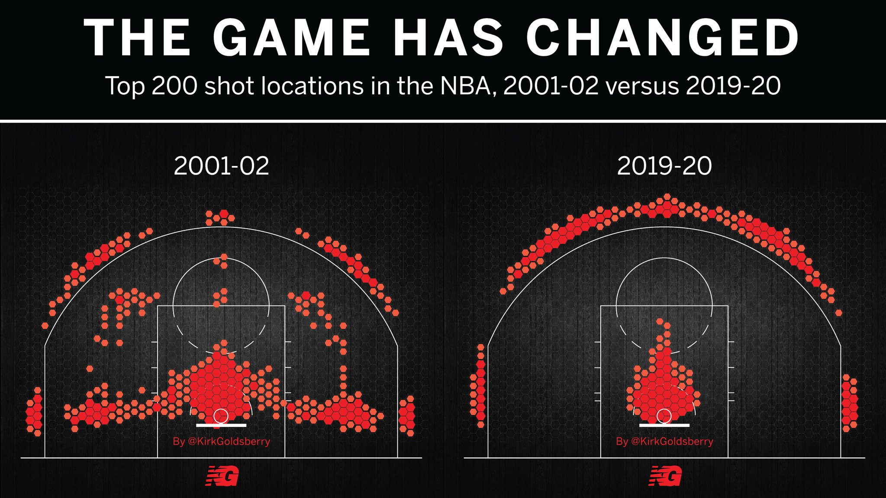
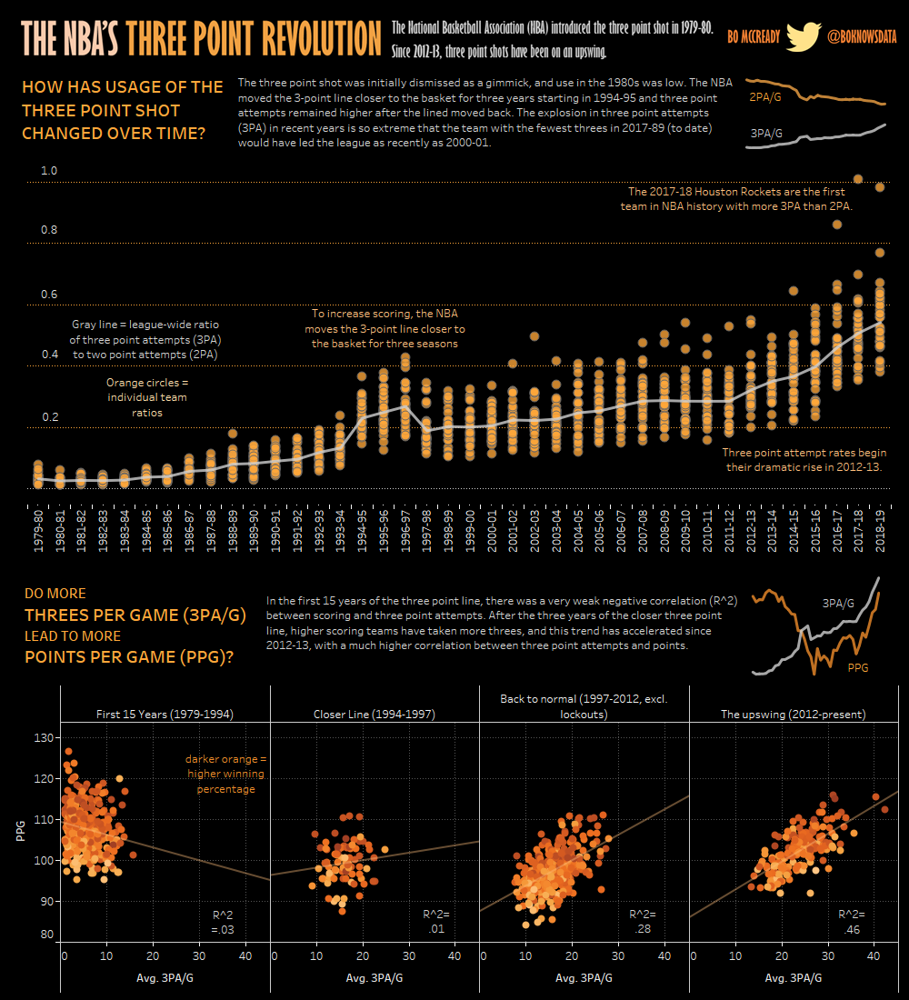
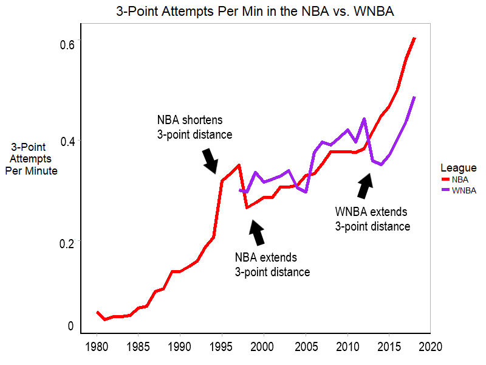
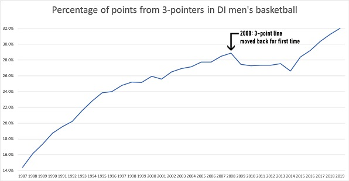
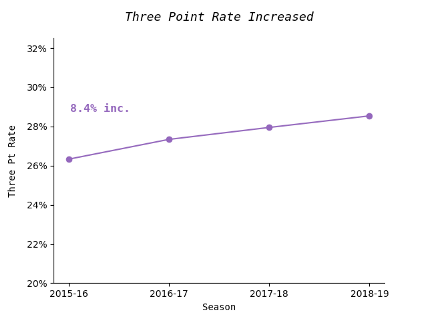

Moreyball

If you're familiar with basketball, you probably know just how much Daryl Morey changed the way the game is played.
In case you're not familiar, let me explain:
A long-time NBA executive, Morey's philosophy heavily favors 3pt field goals, layups, and foul shots over mid-range jumpers.
Morey was so influential in creating this style that they named it after him - it's called "Moreyball".
And Moreyball has been transformational for the game of basketball.
Just look at this image from @KirkGoldsberry on Twitter, which displays the most common shot locations in the 2001-2002 NBA season versus the 2019-2020 NBA season:
This picture makes clear just how influential the Moreyball strategy has become - it has transformed where shots are taken from, which is foundational for basketball tactics and strategy.
My personal conviction is that Moreyball should be the preferred playing style at all levels of basketball, not just the NBA.
I'll use this section to document why I think that and where in the basketball world I think the playing style arbitrage opportunities are right now.
NBA Level
At the NBA level, the Moreyball revolution is both widespread and well-known. This graphic from Bo McCready (@boknowsdata) that I found on Reddit does a great job of explaining it:
The upshot is that NBA teams are shooting way more 3pters than they used to, and as a result their offensive efficiency has improved substantially.
I also find this quote from one of the NBA's best coaches, Rick Carlisle, to be very illuminating with respect to Moreyball:
The [mid-range jumper] is just not a good play anymore...It's a low-value situation...When any of our guys [attempt mid-range jumpers], our effectiveness is diminished exponentially. It's counter-intuitive, I understand that. But it's a fact.
I also loved this exchange between a reporter and NBA head coach Mike D'Antoni after D'Antoni's Rockets lost Game 7 of the Western Conference Finals to a historically great Golden State Warriors team.
D'Antoni laughs off the reporter's question as to whether losing that game made him lose confidence in the Rockets' strategy of playing Moreyball.
Of course not! he insists. If we weren't playing Moreyball then we wouldn't have made it this far in the first place!
Clearly some of the NBA's best coaches are adament that Moreyball is the correct strategy.
WNBA
The story really isn't all that different in the WNBA:
The above picture was taken from this article from Her Hoop Stats about 3pt trends in the WNBA.
The trend is clear: WNBA teams are following NBA teams' lead in attempting more 3pters per game.
What's more is that even within the league, the best WNBA teams favor 3pters more than the mediocre WNBA teams do.
As Wall Street Journal sports writer Ben Cohen chronicles in this article, the best offensive team in WNBA history, Elena Delle Donne's championship-winning 2019 Washington Mystics, was built around the 3pter.
Overall, the argument is pretty unassaible: professional teams (and I should add - this includes international teams) increasingly subscribe to Moreyball as their preferred strategy.
Men's College Basketball
Even in men's college basketball, the story is really not so different.
The above picture was taken from this article about the rationale for moving the 3pt line back ~1ft to 22' 1.75'' in men's college basketball starting in the 2020-2021 season.
That's right: the 3pter was becoming so dominant that they actually changed the distance of the 3pt line to make it a more difficult shot!
Although this rule change may curb the upward 3pt trend somewhat, my guess is that it won't have a huge effect.
The dominance of the 3pter will remain - Moreyball is just strategic common sense in modern basketball.
Women's College Basketball
When the men's college basketball rules committee decided to move their 3pt line back, the women's college basketball rules committee held off.
But by all accounts, the trend in the women's game is pretty similar to the trend in the men's game: 3pt attempts per game are going up.
The above picture was taken from this article from Her Hoop Stats about 3pt trends in the women's game.
Although the trend line is not as steep as the men's, it's still noticable: women are attempting more 3pters than they ever have, and show no signs of slowing down.
Of course, 3pters attempted and 3pt accuracy depends on the level of play. See the below table from the 2018-2019 season:
| 3PM | 3PA | 3PT% | |
|---|---|---|---|
| Division I | 6.05* | 19.13* | 31.6% |
| Division II | 6.14* | 19.44* | 31.6% |
| Division III | 5.53* | 18.70* | 29.6% |
| *all-time high |
The left column depicts 3pters made per game (3PM), the middle column depicts 3pters attempted per game (3PA), and the right column depicts 3pt shooting percentage (3PT% = 3PM / 3PA)
It's clear that 3pt accuracy is lower in Division III compared to Divisions I & II, but that's to be expected given the overall lower talent level in Division III.
But what's also clear is that Division III teams attempt fewer 3pters than Division I & Division II teams, which indicates that Moreyball has not yet taken hold in Division III.
That's the inefficiency that I want to exploit - Division III teams should be using a Moreyball strategy just as much as the other divisions do.
So that's the style I'd be committed to: playing the way the pros play, playing Moreyball.
As I've explained, prioritizing 3pt shooting and playing "Moreyball" is just a matter of strategic common sense.
And I'm a big fan of common sense.
Preparing a team to play Moreyball
Needless to say, preparing a team to play Moreyball is not as simple as snapping your fingers. It takes a lot of practicing and a lot of commitment to get the most out of the strategy.
First and foremost, you have to have shooters on your team. Without shooters, Moreyball is an ineffective strategy. So as a coach, this would be one of my top priorities: building better shooters.
There's no way to build better shooters other than to devote lots of practice time to shooting. I think too many basketball coaches neglect game-like shooting repitions. To me, this is a big missed opportunity.
Every basketball coach should feel a responsibility for equipping their players with a good enough shooting form that players can use effectively in games. Just like the army must train soldiers how to shoot a rifle, a coach must train their players how to shoot a 3pter.
Some players will arrive with a great shot and won't need any coaching. Other players will arrive with a decent shot, and only some minor modifications will be required. Still other players will arrive with no 3pt shot at all, and you'll have to start from the ground-up. It's the coach's job to give each player the instruction they require to have good enough shooting form.
Then, using a games-approach to coaching, a good amount of practice time should be alloted for players shooting in live drills versus a defensive contest. Repetitions in such drills are the quickest, most effective path towards improving each player's shot.
Beyond shooting games, a good Moreyball coach will build other games into their practice to incentivize proper Moreyball spacing. Rules like not allowing mid-range shots or giving extra points for layups & 3's will get your team playing Moreyball in no time.
Overall, it will be a process to transition a team into playing Moreyball. But tons of coaches have done it, and tons more will do it in the future. Figuring out how to do it best is one of the joys in the art of coaching.
Youth Levels
Data isn't as abundant at the youth level as it is at the college and professional levels.
But having watched my fair share of high school and AAU basketball, I can tell you this for sure: Moreyball isn't being prioritized enough.
There are two aspects of youth basketball in need of improvement that are worth mentioning: shooting mechanics and playing style.
Shooting Mechanics
One if the problems is that youth athletes are not taught to shoot properly, and ball size and basket height are not adjusted by age as they should be to promote better shooting mechanics.
A good rule of thumb I've heard is that the height in feet of the basketball hoop should be roughly equal to the age of the youngster shooting on the hoop.
So an 8-year-old should be shooting on an 8-ft hoop, a 9-year-old should be shooting on a 9-ft hoop, and 10-ft hoops should be reserved for the 10-year-old-and-up contingent.
Making these simple, age-appopriate adjustments would allow youngsters to reach the basket without compromising their shooting form (i.e. without having to chuck the ball at the hoop).
Something to keep in mind for parents and youth coaches!
Playing Style
Youth basketball shouldn't be all about winning. That leads to burnout and attrition. Instead, youth basketball should be about having fun, staying active, and promoting good sportsmanship and teamwork. I get that.
But those objectives and learning how to play the game better aren't necessarily mutually exclusive. In fact, under the right circumstances, they go hand-in-hand.
So I would urge youth coaches to build fun into teaching a Moreyball playing style. That is, after all, what even I would do at the college level - by using a games approach to coaching.
Just build in incentives to shoot 3pters and finish at the basket and voila - you're teaching Moreyball. Obviously it's a bit more complicated than that, but not by much.
By all means: don't over-engineer the offense at any youth level. Kids need freedom to explore and play creatively.
But don't be naive either - Moreyball is here to stay, and the more youth coaches realize that and teach towards it the better.
Conclusion
Before Daryl Morey, professional basketball teams were negligent - they weren't valuing the 3pt shot as much as they rationally should have been.
Nowadays, every professional team (men's or women's, international or domestic) is more-or-less caught up to this idea. 3pt shooting is being appropriately valued now more than ever at the professional level.
But there is still "room to run" for the 3pter at all levels of the college game and certainly in youth basketball - to build skilled basketball players and to play a rational basketball strategy, 3pt shooting and attacking the basket need to be the priorities.
Moreyball is the way of the basketball future - basketball coaches can either get on board or get left behind.